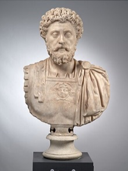

121-180 AD · How to Live
← The philosophy map · About Marcus Aurelius
Is it events that upset us, or the way we think about them?
Two people get the same email from their boss: "Can we talk tomorrow?" One sleeps badly, sure she is about to lose her job. The other thinks, "Maybe it's about the new project," and goes to the cinema. The email is exactly the same. Nearly two thousand years ago, the most powerful man in the world wrote notes to himself about this.
Read one part at a time. After each part, close your eyes and answer the question before you check.
Marcus Aurelius was born in Rome in 121 AD. As a boy he loved philosophy, and he was adopted into the family of the emperor. In 161 he became emperor himself, ruling an empire that stretched from Britain to Egypt and Syria. He was one of the most powerful people who has ever lived. But he also wanted to be a good person, and he tried to follow the Stoic ideas that Zeno had started in Athens.
Which philosophy did Marcus try to follow?
His years as emperor were hard. There were long wars on the northern borders of the empire, and a terrible plague killed huge numbers of people. Marcus spent years living in army camps. There he wrote short notes to himself in Greek: reminders to be patient, fair and calm. He never meant anyone else to read them. His own title was simply 'To Himself'. Today we call the book the Meditations.
Who did Marcus write the Meditations for?
A citadel is a strong fortress that protects a city. Marcus compared a calm mind to a citadel. Things outside, like rude people, bad news or pain, cannot get in unless our own judgement opens the door. In one note, he tells himself that when something outside upsets him, the trouble comes not from the thing itself, but from his own judgement of it. Marcus died in 180 AD, while on campaign with his army.
What did Marcus compare a calm mind to, and why?
Each word is hidden in a sentence. Read it aloud and say what you think the bold word means. Then reveal and compare.
Marcus tried to separate what actually happened from his judgement about it. Which of these are plain events, and which are judgements? Decide together, then reveal.
Now you: explain the inner citadel to a friend who gets upset by every rude comment online. Speak for about a minute. Use the starters if they help.
Imagine you keep a private notebook of advice to yourself, like Marcus. One day, a publisher offers you a lot of money to print it for the whole world to read. Your name would be on the cover, and everyone you know could read it.
Tap two cards. Use the timer to keep going, and use at least two of the phrases above.
No looking back. Answer from memory first, then check.
What was Zeno's main lesson about things we can't change?
What did Diogenes believe we need in order to be free?
What did Democritus say everything is made of?
From memory, out loud. Then check.
1. What did Marcus Aurelius mean by the inner citadel?
2. Why did Marcus write the Meditations?
3. What was happening in the empire while he was writing?
4. What does 'perspective' mean? Give an example.